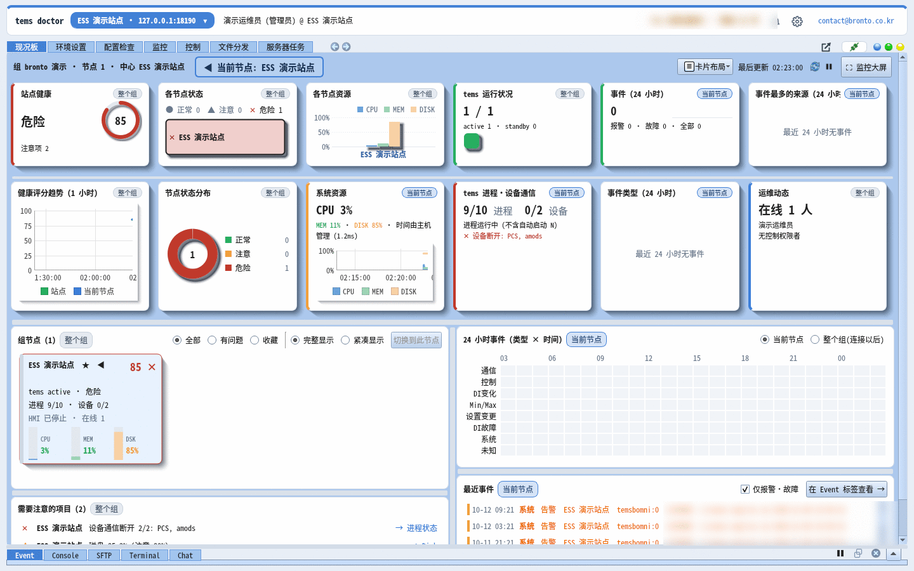

tdoctor 免费试用
14 天免费畅享 Pro 全部功能。
亲自体验 tOps 的运维人员界面 tdoctor，它是远程运维 tems 服务器的工具。只需填写姓名和邮箱，用邮件收到的一个安装程序即可完成安装，无需另外输入安装密钥。
目前只能申请 Windows PC 版试用。申请界面在 bronto 的分发服务器 update.ess.center 上打开。申请界面和邮件目前仅提供韩语。

目前只能申请 Windows PC 版试用
试用版只有一个适用于 64 位 Windows 的安装程序。Linux 版 tdoctor 和 Android 应用不包含在试用版中，如有需要请联系我们。申请前请确认以下配置要求。
| Windows 版本 | Windows 10 · Windows 11 (64 位) · Home · Pro · Enterprise 均可使用。Snapdragon 等 Windows 11 ARM PC 通过 x64 仿真运行。 |
|---|---|
| 不支持的环境 | Windows 7 · 8.1、32 位 Windows、macOS、Linux PC |
| CPU · 内存 | 64 位 CPU · 建议内存 4GB 以上 |
| 磁盘 | 可用空间 500MB 以上(安装后约 120MB，更新时会保留之前的版本) |
| 屏幕 | 建议 1366 × 768 以上(1920 × 1080 以上可一眼看全仪表盘) |
| 权限 | 安装时需要管理员权限(在"你要允许此应用对你的设备进行更改吗?"中点击 [是])。如公司 PC 受限，请向 IT 负责人申请。 |
| 互联网 | 安装、许可证验证和更新需要能够访问 update.ess.center(HTTPS，443 端口)的出站连接。 |
| 连接 tems 服务器时 | 离线模式只需 PC 即可使用。要远程运维服务器，tems 服务器上需有 brontod，且 PC 需通过公司内网或 VPN 访问该服务器。 |
从申请到安装只需 4 步，5 分钟完成
试用按既定策略立即开通，无需等待负责人审批。
申请
点击 [申请试用]，填写姓名·邮箱(公司·电话选填)，并同意收集和使用个人信息。
邮箱验证
打开邮件 "[tdoctor] 평가판 이메일 확인"(邮箱验证，韩语)中的链接，点击 [평가판 시작](开始试用)。
下载安装程序
点击 [Windows 설치 파일 내려받기](下载 Windows 安装程序)。同样的链接也会通过邮件发送。安装密钥可在 7 天内用于 1 台 PC。
运行
运行下载的 tdoctor-setup-....exe 文件，在"你要允许此应用对你的设备进行更改吗?"中点击 [是]。任务栏出现 tVault 图标即表示安装完成。


试用期间可以体验的功能
试用版为 Pro 版本。一次向多个节点部署文件、执行服务器任务等功能全部开放。
离线立即体验
没有服务器也可以。通过连接窗口的 [离线打开…] 打开 PC 上的 tems 配置文件夹，体验环境检查和配置编辑。
连接 tems 服务器体验
如果运行中的 tems 服务器上有 brontod，连接后即可体验从仪表盘·监控到进程控制·文件部署·服务器任务的实际运维流程。
自动更新
试用期间如有新版本发布，通知区域的 tVault 图标会提醒您。可以选择立即·稍后·跳过，并查看更新内容。
试用结束后
提前通知您
在结束前 3 天和最后一天向您发送邮件，tdoctor 通知区域也会显示"试用剩余 N 天 · 联系我们"。
结束后停止使用
从试用结束当天起，tdoctor 界面将被锁定。不会改动服务器或 tems 配置，也没有自动扣费。
转为正式版继续使用
咨询购买后，无需在同一台 PC 上重新安装，即可为您转为正式许可证(Basic · Pro，永久 · 限期)。
常见问题
收不到验证邮件。
请先在垃圾邮件·推广邮件文件夹中查找标题为 "[tdoctor] 평가판 이메일 확인" 的邮件。如果仍然找不到，请将申请时使用的邮箱地址发送至 contact@bronto.co.kr。
只用 tdoctor 可以吗? 需要服务器吗?
离线模式(环境检查·配置编辑)只需 tdoctor 即可使用。要远程运维服务器，tems 服务器上需有 brontod。如需测试服务器，请联系我们。
可以安装到其他 PC 上吗?
每份试用申请对应 1 台 PC。不能用同一邮箱再次申请，也不能在同一台 PC 上只换邮箱重新获取。如需在多台 PC 上试用，请联系我们。
把安装好的程序复制到其他 PC 上运行会怎样?
许可证通过签名令牌和 PC 唯一值进行验证。复制的程序无论试用期如何都会显示为"复制品"，只能短期使用，很快就会停止使用。
Mac · Linux 或 Windows 7 上也能用吗?
目前的试用版只能安装在 Windows 10 · 11 (64 位) PC 上。Linux 版 tdoctor 随正式许可证提供，如希望在 Linux 上评估，请联系我们。
Android 应用也有试用版吗?
本试用版仅适用于 1 台 Windows PC，不包含 Android 应用。正式许可证每个账户可同时使用 1 台 PC 和 1 部手机。如希望在评估期间也查看手机界面，请联系我们。
我想卸载。
在 Windows [设置] → [应用] 中[卸载] tdoctor 和 tVault Agent，或在通知区域的 tdoctor 图标菜单中选择 [tdoctor Uninstall]。
我的信息会如何使用?
仅用于提供试用、发送安装·期限提醒邮件以及答复咨询，并在试用结束 1 年后删除。广告资讯仅在您另行同意时发送，可随时退订。详情请参阅隐私政策。